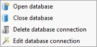

Use the right click menu on the database level to call database management options.  This menu allows the edition or deletion of a database connection. This works only for the connection to QGIS, the database itself and the connection to GeODin are not touched.